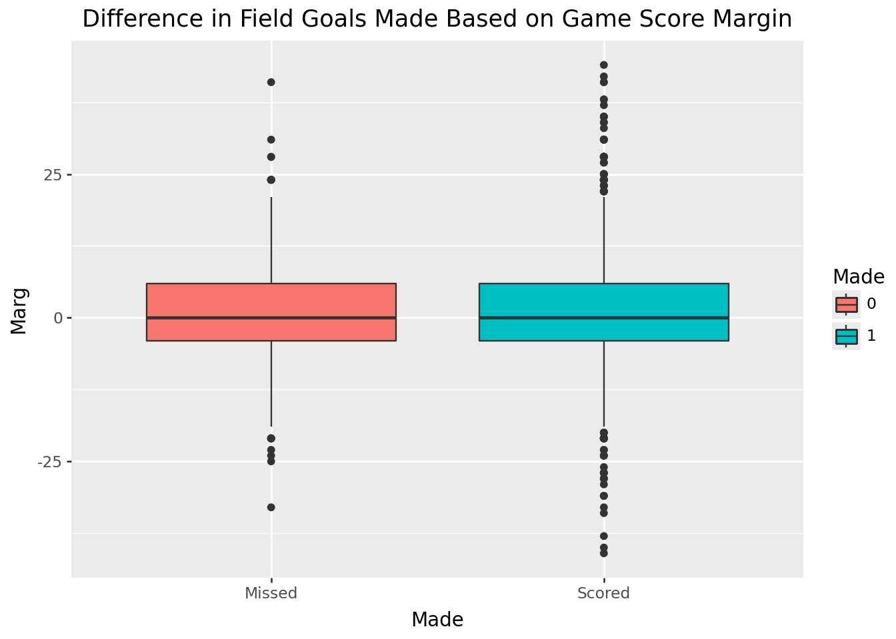
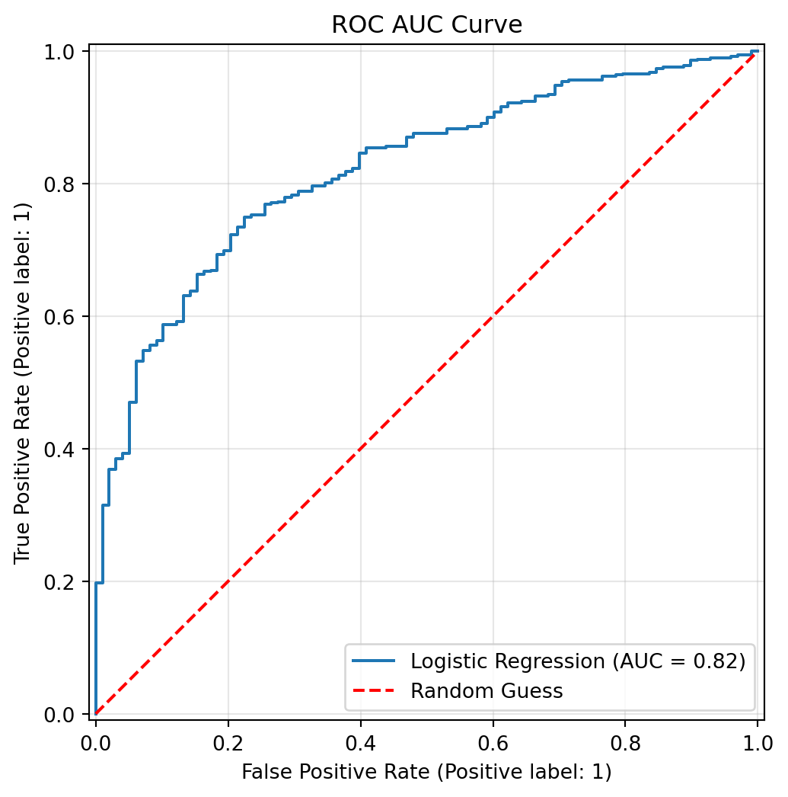
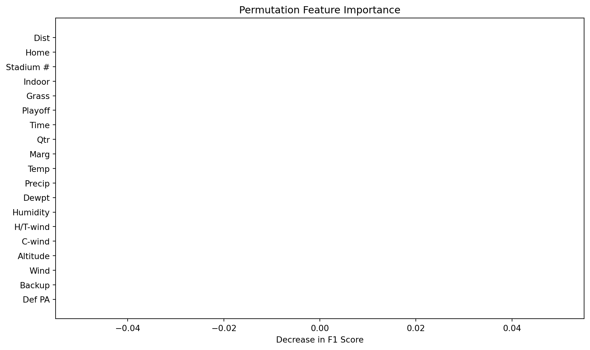

nfl_fg = pd.read_csv('../data/nfl-fg-data.csv')
# Drop unnecessary/repetitive columns
nfl_fg_clean = nfl_fg.drop(columns=['FG ID', "|Marg|", 'Denver', 'Precip Bin'])
# Because stadium ID is arbitary but formated as numeric
nfl_fg_clean['Stadium #'] = nfl_fg_clean['Stadium #'].astype('category')Predicting NFL Field Goals
By Alex Emert
Introduction
The NFL is one of the most popular sports organizations in the United States. Through a combination of marketing and spectacle, the Super Bowl is watched even by people that would not usually watch or even like football. One way in which marketing has resulted in this being an extremely profitable industry is through sports betting. Through a variety of apps, you can bet money on pretty much anything nowadays. This opens many opportunities for statisticians through prediction and data analysis that we can use to get ahead of the majority of people. In this sample analysis, I will explore the prediction of field goals made in a few years of NFL games.
Because we don’t know what the conditions will be like until during the game, I will be using a data set consiting of all of the previous NFL field goals attempted in the last couple years. Because of the way many betting apps work, we will be predicting whether or not any certain field goal will be made or not based off of a variety of contextual conditions, like weather or game score.
The Data
Made: Whether or not the field goal was successfully scored
Dist: How far the field goal was attempted from, in yards.
Home: Whether or not the team is at their home stadium.
Stadium #: An arbitraty ID of which stadium it was in.
Indoor: Whether or not the field is indoors.
Grass: Whether or not the field is real grass or synthetic turf.
Playoff: Whether or not the field goal was attempted in the playoffs.
Time: How many minutes there are left in the game.
Qtr: Which quarter of the game it is.
Marg: The difference in score between the kicking team and the opponent.
Temp: The temperature, in degrees Fahrenheit.
Precip: The precipitation, or rain, in inches per hour.
Dewpt: The degrees in fahrenheit for dew to form.
Humidity: The relative humidity in percent.
H/T-wind: Windspeed parallel to kick, in miles per hour.
C-wind: Crosswind speed (perpendicular to kick), in miles per hour.
Altitude: The altitude of the stadium, in feet.
Wind: Overall wind speed, in miles per hour.
Backup: Whether or not the field goal was attempted by a backup kicker (not the team’s starter, or best).
Def PA: Points allowed by the other team (ability to prevent scoring).
Code
print(nfl_fg_clean.shape)(3000, 20)There are 3000 observations and 20 features, including the target.
Exploratory Data Analysis
Now that we’ve looked at our variables, it’s time to look a little deeper into what this data set looks like. Here are some relevant plots of the data:
Code
nfl_graphing = nfl_fg_clean.copy()
# Helps with graphing
nfl_graphing['Made'] = nfl_graphing['Made'].astype('category')Code
(
ggplot(nfl_graphing, aes(x='Made')) +
geom_bar(fill = '#FF474C')
+ scale_x_discrete(labels=["Missed", "Scored"])
+ labs(title = 'Amount of Field Goals Made')
)
As we can see, most of the field goals were successful. This will mean that our accuracy should be pretty high as a baseline, due to the model mostly predicting successes in the first place.
Code
corr = nfl_fg_clean.corr()
mask = np.triu(np.ones_like(corr, dtype=bool))
f, ax = plt.subplots(figsize=(10, 8))
cmap = sns.diverging_palette(230, 20, as_cmap=True)
sns.heatmap(
corr,
mask=mask,
cmap='viridis'
)
plt.title('Correlation Heatmap', fontsize=16, pad=20)
plt.show()
While a correlation heatmap should be taken with a grain of salt with a binary response variable, this shows us that Distance may be something that we should look out for. It also tells us about any collinearity between variables that may impact strategies like logistic regression.
Code
(
ggplot(nfl_graphing, aes(x='Temp', fill='Made')) +
geom_histogram()
)C:\Users\alexe\miniforge3\envs\math4025\Lib\site-packages\plotnine\stats\stat_bin.py:112: PlotnineWarning: 'stat_bin()' using 'bins = 30'. Pick better value with 'binwidth'.
Depending on the strategy we use, skewness like this one may or may not be a problem.
Code
(
ggplot(nfl_graphing, aes(x='H/T-wind', fill='Made')) +
geom_histogram() +
labs(title='Parallel-facing Wind Distribution')
)C:\Users\alexe\miniforge3\envs\math4025\Lib\site-packages\plotnine\stats\stat_bin.py:112: PlotnineWarning: 'stat_bin()' using 'bins = 39'. Pick better value with 'binwidth'.
While transformations may need to be applied, like yeo-johnson or similar, if a forest-based model is used this will have less of an impact and may be more useful and interpretable if left unchanged.
Code
(
ggplot(nfl_graphing, aes(x='Made', y='Marg', fill = "Made")) +
geom_boxplot() +
scale_x_discrete(labels=["Missed", "Scored"]) +
labs(title = "Difference in Field Goals Made Based on Game Score Margin")
)
While outliers may be something to consider, it is also important to think about how many samples are on each side of this boxplot. While Scored has a wider range, it also has a significant more number of observations in the first place.
Data Splitting
nfl_train, nfl_test = train_test_split(nfl_fg_clean, test_size=0.2, random_state=4025)
X_train = nfl_train.drop(columns=['Made'])
y_train = nfl_train['Made']
X_test = nfl_test.drop(columns=['Made'])
y_test = nfl_test['Made']Code
print(f"The average number of field goals in this data set made is: {nfl_train["Made"].mean()}")The average number of field goals in this data set made is: 0.8220833333333334As you can see, about 82 percent of the field goals in my training set were made. This means that accuracy should be higher than 83% as it sets a baseline for the model.
Preprocessing
Because the dataset consists of no missing values, imputation will not be needed. Scaling is not necessary for tree-based models, but can be useful for other types. To take advantage of this, we will try with and without scaling.
Additionally, most of the categorical variables are already in the form we need (dummy coded) to those can be passed through for now.
Unfortunately, Stadium # is not encoded. This will have to be addressed with a rare label encoder, followed by a one hot encoder.
Code
cat_vars = ['Home', 'Indoor', 'Grass', 'Playoff', 'Backup']
need_encoding_cols = ['Stadium #']
num_vars = ['Dist', 'Time', 'Qtr', 'Marg', 'Temp', 'Precip', 'Dewpt', 'Humidity', 'H/T-wind', 'C-wind', 'Altitude', 'Wind', 'Def PA']
features_list = X_train.columns.tolist()
stadium_pipe = Pipeline([
('rare_grouper', RareLabelEncoder(tol=0.05, n_categories=5, replace_with='Other')),
('one_hot', OneHotEncoder(handle_unknown='ignore', sparse_output=False))
])
preproc_scaler = ColumnTransformer([
('stadium', stadium_pipe, need_encoding_cols),
('num', StandardScaler(), num_vars),
('cat', 'passthrough', cat_vars)
])
preproc_no_scaler = ColumnTransformer([
('stadium', stadium_pipe, need_encoding_cols),
('cat', 'passthrough', cat_vars)
]) Model Fitting and Tuning
Models that will be fitted: - Logistic Regression - K Nearest Neighbors - Random Forest - XGBoost classifier
Logistic Regression
Code
logreg_pipe = Pipeline([
('preprocess', preproc_scaler),
('model', LogisticRegression(l1_ratio=1, solver='saga'))
])
param_grid = {
'model__C': np.logspace(-4, 2, 50)
}
cv = RepeatedKFold(n_splits=5, n_repeats=5, random_state=4025)
grid_search = GridSearchCV(logreg_pipe, param_grid, cv=cv, scoring='f1')
grid_search.fit(X=X_train, y=y_train)
print(grid_search.best_params_){'model__C': np.float64(0.15264179671752334)}Because accuracy is likely to be untrustworthy due to our uneven class sizes, f1-score will be used instead in the grid search. This is because it weights precision and recall so that our result is more balanced.
Code
logreg_pipe.fit(X_train, y_train)
fig, ax = plt.subplots(figsize=(8, 6))
RocCurveDisplay.from_estimator(logreg_pipe, X_test, y_test, ax=ax, name="Logistic Regression")
plt.plot([0, 1], [0, 1], linestyle='--', color='red', label='Random Guess')
plt.title('ROC AUC Curve')
plt.grid(alpha=0.3)
plt.legend()
plt.show()
It seems our ROC curve is pretty good, but it definitely could be better.
logreg_y_pred = logreg_pipe.predict(X=X_test)
print(accuracy_score(y_test, logreg_y_pred))0.8416666666666667Same with our accuracy. We would like this to be a little higher. Let’s try some other models.
KNN
knn_pipe = Pipeline([
('preprocess', preproc_scaler),
('knn', KNeighborsClassifier())
])
param_grid = {
'knn__n_neighbors': np.linspace(1, 100, 100, dtype=int)
}
knn_cv = RepeatedKFold(n_splits=5, n_repeats=5, random_state = 4025)
knn_grid_search = GridSearchCV(
estimator = knn_pipe,
param_grid=param_grid,
cv=knn_cv,
scoring='f1'
)
knn_grid_search.fit(X_train, y_train)
print(f"Best Parameters: {knn_grid_search.best_params_}")Best Parameters: {'knn__n_neighbors': np.int64(40)}knn_best = knn_grid_search.best_estimator_
knn_best.fit(X_train, y_train)
knn_y_pred = knn_best.predict(nfl_test[features_list])
knn_accuracy = accuracy_score(y_true=nfl_test['Made'], y_pred = knn_y_pred)
print(knn_accuracy)0.8366666666666667As you can see, KNN performed a little worse. Now on to some more complex models.
Random Forest
Because random forest doesn’t require scaling, we don’t really even require preprocessing for this model.
rf_pipe = Pipeline([
('preproc', preproc_no_scaler),
('clf', RandomForestClassifier(random_state=4025))
])
param_grid = {
'clf__n_estimators': [100, 200, 300],
'clf__max_depth': [None, 10, 20],
'clf__max_features': ['sqrt', 'log2'],
'clf__min_samples_leaf': [1, 2, 4],
'clf__class_weight': ['balanced', 'balanced_subsample', None]
}
rf_cv = StratifiedKFold(n_splits=5, random_state=4025, shuffle=True)
num_iter = 10
rf_grid = GridSearchCV(
rf_pipe,
param_grid=param_grid,
cv=rf_cv,
scoring='f1',
n_jobs=-1
)
rf_grid.fit(X_train, y_train)Code
y_preds_tuned = rf_grid.best_estimator_.predict(X_test)
rf_tuned_acc = accuracy_score(y_test, y_preds_tuned)
print(f"The tuned accuracy is: {rf_tuned_acc}")The tuned accuracy is: 0.8333333333333334Interestingly, this is a little worse than the Logistic Regression model. Maybe the XGBoost will perform better.
XGBoost
xg_pipe = Pipeline([
('preproc', preproc_no_scaler),
('clf', XGBClassifier(random_state=4025))
])
param_grid = {
'clf__max_depth': [3, 5, 7],
'clf__min_child_weight': [1, 5, 10],
'clf__subsample': [0.8],
'clf__colsample_bytree': [0.8],
'clf__learning_rate': [0.01, 0.1],
'clf__gamma': [0, 0.2, 0.5]
}
xg_cv = StratifiedKFold(n_splits=5, random_state=4025, shuffle=True)
num_iter = 20
xg_grid = RandomizedSearchCV(
xg_pipe,
param_grid,
cv=xg_cv,
n_iter=num_iter,
scoring='f1',
n_jobs=-1
)
xg_grid.fit(X_train, y_train)Code
xg_y_preds_tuned = xg_grid.best_estimator_.predict(X_test)
xg_tuned_acc = accuracy_score(y_test, xg_y_preds_tuned)
print(f"The tuned accuracy is: {xg_tuned_acc}")The tuned accuracy is: 0.8366666666666667It seems the accuracy of this was quite similar to that of the other similar models.
Feature Importances
Earlier, after looking at the correlation matrix, it was estimated the Dist, or Distance, would be the most important feature. We can check this by looking at the XGBoost feature importances.
Code
result = permutation_importance(
xg_grid.best_estimator_, X_test, y_test,
n_repeats=20,
random_state=4025,
scoring='f1'
)
importances_df = pd.DataFrame({
'feature': features_list,
'mean': result.importances_mean,
'std': result.importances_std
}).sort_values(by='mean', ascending=False)
plt.figure(figsize=(10, 6))
plt.barh(importances_df['feature'][::-1], importances_df['mean'][::-1], xerr=importances_df['std'][::-1])
plt.xlabel("Decrease in F1 Score")
plt.title("Permutation Feature Importance")
plt.tight_layout()
plt.show()
Code
print(xg_grid.best_estimator_.predict_proba(X_test)[:5])[[0.16785282 0.8321472 ]
[0.17374295 0.82625705]
[0.24915695 0.75084305]
[0.16485041 0.8351496 ]
[0.1783812 0.8216188 ]]Model Performance
In the end, our final results were: Logistic Regression: 84.16% accuracy KNN: 83.67% accuracy Random Forest: 83.3% accuracy XGBoost: 83.67% accuracy
While there are other more metrics that may capture the successfulness of the model better, I think that accuracy is probably overall more relevant because if we were actually using this data to bet money in the real world, whether or not we are correct is the primary importance.
This means while by my experimentation Logistic Regression performed the best, there may be other models that would perform better. According to my analysis, Logistic Regression was the most successful.
Conclusion
Overall, it seems like many of the models performed similarly. I think that this could be attributed to the size of the data, so if I were to go back and do this project again I would try to find even more data.
Another important part of this project was the lack of missing data, which is a part of why there was little data in the first place (I assume that is when they started collecting all that weather data). Were there to be more data and missing data, the process would be similar but a bit more complicated with imputation.
In the end, this project was a useful way to apply concepts of machine learning and predictions to a data set with real world implications. I learned a lot about how to present data simply, and how to communicate in a way that is comprehensible to a larger audience. In the future, I would like to work on something with even more concrete application, which I think would allow me to use other skills that I am still developing.